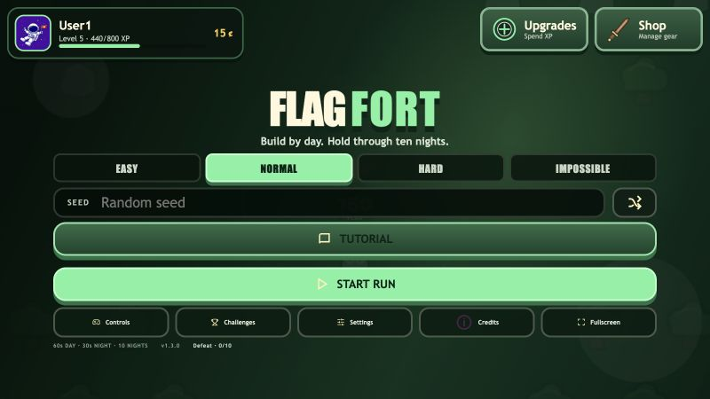
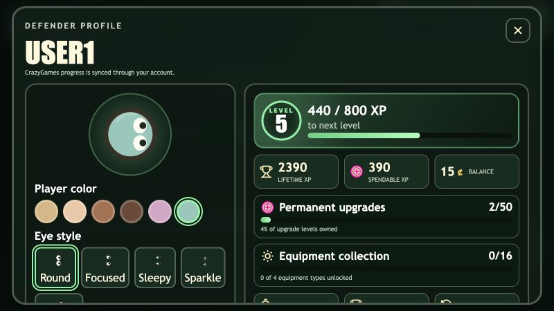
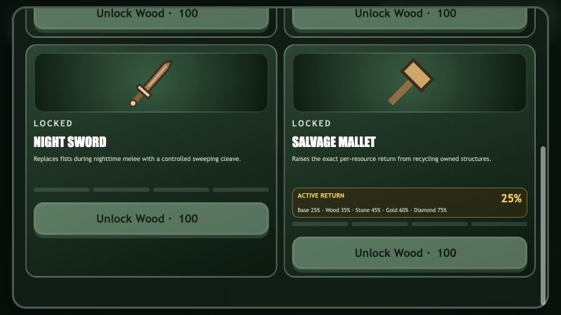
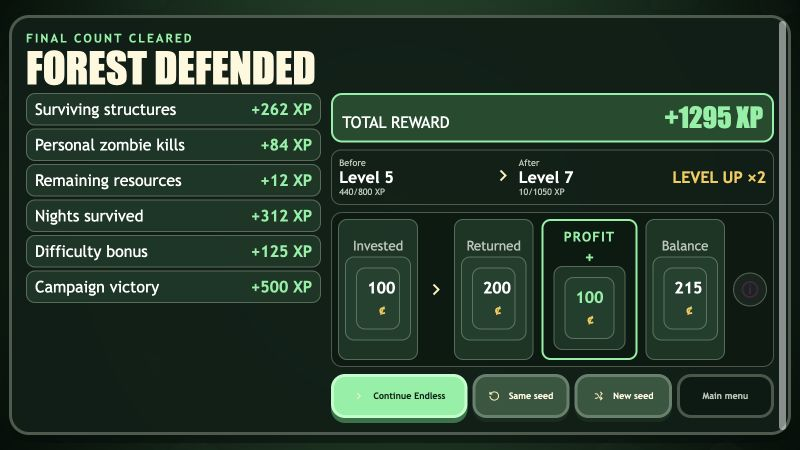

FlagFort implementation review
Progression with a single source of truth
Fort value, adaptive difficulty, end-of-run XP, equipment, recycling, profile history, and the main menu now share centralized typed configuration while preserving deterministic wave scheduling and existing CrazyGames persistence.
Source and production build ready
Save migrations covered
Responsive UI inspected at 800 × 450
Real UI at CrazyGames scale
What players see




Canonical structure score
One table drives threat and XP
| Structure | Wood | Stone | Gold | Diamond |
|---|---|---|---|---|
| Wall | 10 | 20 | 34 | 51 |
| Door | 10 | 20 | 35 | 52 |
| Spikes | 13 | 26 | 45 | 68 |
| Harvester | 26 | 51 | 84 | 123 |
| Turret | 36 | 79 | 149 | 262 |
Scores retain the prior adaptive danger ordering, normalize Wood walls and doors to 10, and incorporate cumulative weighted resource cost plus combat or economic output. Only surviving local-player structures contribute.
Additive auto-balance
Independent inputs, one safe result
effective = base + (structure multiplier - base) + (level multiplier - base) + other deltas
Difficulty reward
Documented boundaries
| Effective difficulty | Difficulty XP |
|---|---|
| Reduced, 0.50× | 0 XP |
| Normal base, 1.00× | 0 XP |
| Intermediate, 1.375× | 125 XP |
| Maximum, 1.75× | 250 XP |
The maximum remains derived as 50 percent of the campaign victory bonus, so it tracks future balance changes.
Salvage Mallet
Exact per-resource returns
| Equipped tier | Recycle rate |
|---|---|
| None | 25% |
| Wood | 35% |
| Stone | 45% |
| Gold | 60% |
| Diamond | 75% |
Each resource is floored independently from actual construction and upgrade spend, reduced by damage, and capped at the amount invested.
Persistence and compatibility
Migration paths stay one-way and safe
Wall Health merges into Structure Health using the larger saved level, never an additive double bonus.
Total Nights Survived aggregates settled campaign and Endless nights with settlement ID duplicate protection.
Legacy run history contributes a safe minimum total when older profile data lacks the new account statistic.
Mallet inventory and new eye selections default safely for existing profiles and use the current storage key.
CrazyGames account loading, daily rewards, progress reporting, happytime, and local fallback remain in place.
Campaign settlement can continue the surviving fort into independently settled Endless progression.
Implementation footprint
Extended systems, no parallel replacements
src/config.tssrc/meta-balance.tssrc/rules.tssrc/rewards.tssrc/equipment.tssrc/profile.tssrc/game.tssrc/ui.tssrc/renderer.tssrc/styles.csspublic/images/equipment/src/progression-refinement.test.ts
Production assets under dist/ were regenerated from the verified source so the static CrazyGames-ready package matches the implementation.
Verification
Final gate
npm test: 17 files and 180 tests passed.npm run build: TypeScript and Vite production build passed.npm run visual:validate: all 222 editable SVGs passed.git diff --check: no whitespace errors.Menu, profile, shop, and reward surfaces inspected at 800 × 450.
Campaign-to-Endless continuation exercised through Dawn 10 and Day 11.